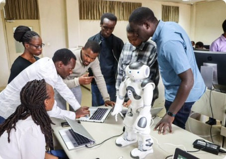

Programme to Attract Young Women to STEM Unveiled
The enduring perception, mostly stereotypical, that girls are not well adopted to pursue courses and careers in science, technology, engineering and mathematics (STEM) has stopped many girls from enrolling into STEM subjects.
To unroll this practice, Jomo Kenyatta University of Agriculture and Technology has launched a strategic initiative designed to empower and woo young women enrolled in the Competency-Based Curriculum (CBC) system, guiding them toward Science, Technology, Engineering, and Mathematics (STEM) careers. By actively engaging with the students and providing them with targeted support and career guidance, the university aims to instill balance in traditional career paradigms and foster a more inclusive and diverse landscape within STEM fields.
Dr. Mindila introduces the pupils to the SCIT computer complex As a prerequisite to the upcoming commemoration of Girls in ICT Day on April 25, 2024, JKUAT trained 50 pupils from JKUAT Primary on robotics and STEM careers. During the session, it was observed that more than 95% of the young women who were trained expressed a preference for careers outside of STEM fields. Many of them indicated aspirations for careers in law, medicine, and the arts, among others. After the training, things took a turn for the better. Dorris Amakobe, a grade 7 pupil who harbors aspirations to be a lawyer had a mental shift.
“I have learnt about careers in technology and I have become interested in artificial intelligence. I want to know how to teach robots to act like humans,” said Doris.
Director of the School of Computing and Information Technology, Dr. Agnes Mindila, stated that teaching children while they are young helps them form their own career paths in technology. Dr. Mindila revealed that plans are underway to make the training an annual event.
"We have started from home but in future we are planning to rope in students from different schools as part of the commemoration of women in ICT,” said Dr. Mindila. She added that the training also provided a valuable window for the university to gather insights into CBC for future endeavours in curriculum development.
The training was supported by UNICEF project under SCIT.